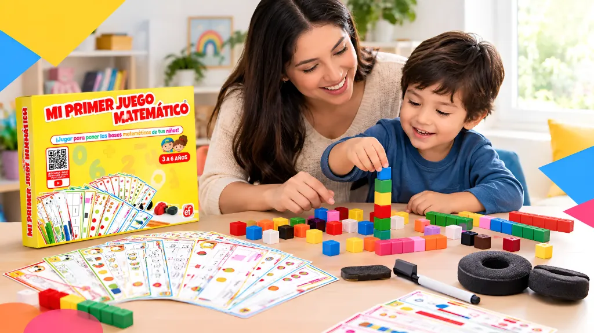
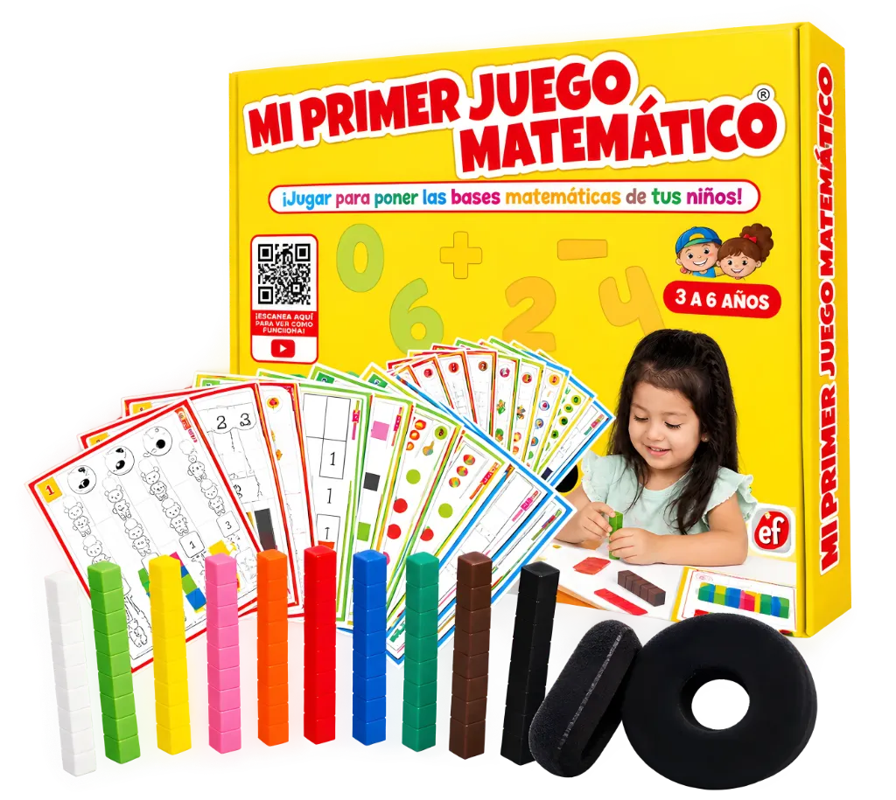
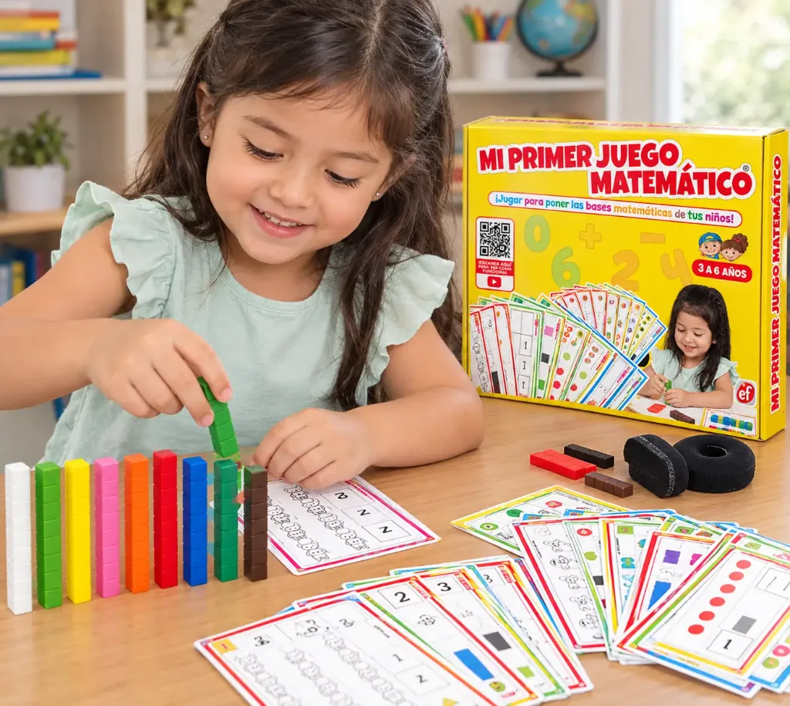
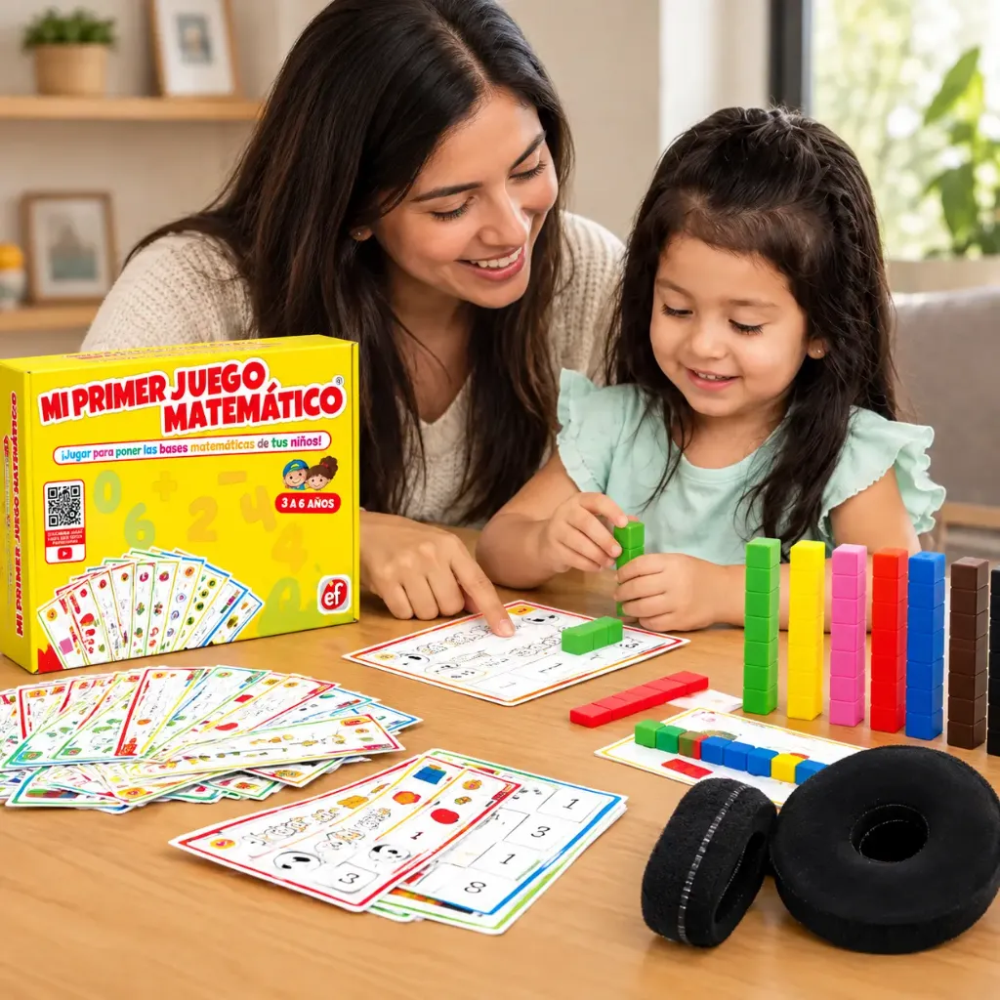
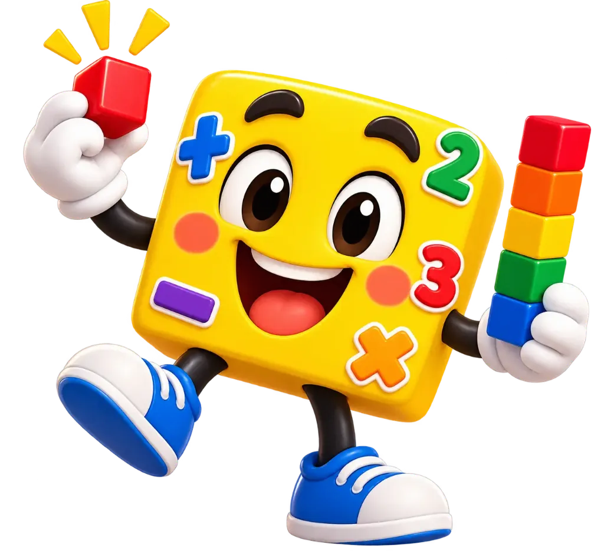

Lo toca
Encaja, separa y construye con cubos. La cantidad deja de ser una idea lejana.
Experiencia concretaAcompaña sus primeros pasos en matemáticas, sin convertir la casa en otro salón de clases. Con Mi Primer Juego Matemático, tu peque practica colores, conteo y primeras sumas mientras juega contigo.
S/ 59 S/ 79 · Oferta de octubre
Asesoría gratuita · Pedido por WhatsApp


¡Todo en una caja!Detrás de cada descubrimiento,
Hans Educa, material didáctico desde 1996.
¿Cuenta de memoria, pero todavía le cuesta relacionar el número con la cantidad? Puedes ayudarlo en casa: primero toca, junta y compara; después llega el símbolo.
Dos cubos y tres cubos forman la misma cantidad que cinco. Aquí puedes verlo; en casa, tu peque lo descubre con sus manos.
👆 Elige otra combinación. Cambian las piezas, la cantidad sigue siendo la misma.
2 más 3 es igual a 5.
Encaja, separa y construye con cubos. La cantidad deja de ser una idea lejana.
Experiencia concretaRelaciona sus construcciones con los dibujos y espacios de las láminas.
Representación visualAhora el número escrito tiene sentido: representa algo que ya exploró.
Símbolos con significadoUna propuesta de aprendizaje activo inspirada en el enfoque concreto, pictórico y simbólico del Método Singapur y en la manipulación y autonomía de Montessori.

No tienes que adelantarlo ni exigirle más. Elige su edad y encuentra una actividad para reforzar lo que está descubriendo, a su propio ritmo.
💡 Prueba esto: “¿Hacemos una familia con todos los cubos rojos?”
Las edades orientan; adapta el reto a su desarrollo. Juega siempre con la compañía de un adulto.
Todos los materiales para construir, borrar, probar y volver a jugar.
10 colores para contar, comparar y construir. De plástico lavable y atóxico.
16 actividades progresivas. Escribe, borra y empieza una nueva aventura.
Para transformar sus cubos en un camioncito e imaginar nuevos caminos.
Equivocarse también es parte del descubrimiento.
Una ayuda para ti, mamá: mira cómo se juega y acompáñalo paso a paso.
Contiene piezas pequeñas. Recomendado de 3 a 6 años, siempre con supervisión de un adulto.
Compara cantidades, descubre patrones y ensaya soluciones.
Construye torres, figuras y caminos a su manera.
Explora una actividad con una meta que puede ver y tocar.
Practica turnos, propone ideas y celebra sus descubrimientos.
Las láminas y los videos te ayudan a empezar. Elige una actividad, siéntate a su lado y deja que pruebe. Pregunta “¿cómo lo hiciste?” y celebra sus intentos: no hace falta que le salga perfecto.
Quiero compartir ese momento

Mi niño está muy contento con este juego.
El kit completo cuesta S/ 59. Elige cuántos quieres y consulta la entrega en tu distrito. Te llevamos a WhatsApp con tu mensaje listo.
Oferta hasta el 31 de octubre de 2026, 11:59 p. m. (hora de Perú). Desde el 1 de noviembre, S/ 79 por kit.
160 cubos + 8 láminas + 16 actividades
Accesorios + videos guía y manual
Confirma disponibilidad, costo de envío y opciones de pago para tu distrito antes de comprar.
Según las condiciones publicadas por Hans Educa: si llega incompleto o dañado, lo reponen sin costo. Cambio o devolución dentro de los 7 días de recibido, sin uso y en su empaque. Solicítalo por WhatsApp.
Mamá, no tienes que resolverlo todo sola. Te ayudamos a elegir y a saber por dónde empezar.
Hacer una consulta por WhatsApp ↗Principalmente de 3 a 6 años. Se empieza con juego libre y clasificación, y se avanza hacia cantidades, patrones, sumas y restas. También puede usarse como apoyo visual con niños mayores, adaptando las actividades.
No, mamá. Las láminas proponen actividades y el QR de la caja da acceso a videos guía. Puedes empezar con una sola consigna, acompañarlo y dejar que explore a su ritmo.
Sí, son plastificadas. El plumón borrable y la mota incluidos permiten escribir, borrar y volver a jugar.
Sí. Puedes jugar con tu peque o compartir el material entre hermanos. Los 160 cubos y las 8 láminas permiten practicar turnos y crear juntos, con supervisión de un adulto.
Los cubos son de plástico lavable y atóxico según la información de la marca. Contiene piezas pequeñas: úsalo siempre bajo supervisión adulta y fuera del alcance de menores de 3 años.
El pedido se coordina por WhatsApp. La marca publica pagos por Yape, Plin y transferencia, además de contra entrega según la zona. Hay envíos a todo el Perú; confirma el costo y plazo para tu ciudad antes de pagar.
Hans Educa publica reposición sin costo si llega incompleto o dañado y cambio o devolución dentro de 7 días de recibido, con el producto sin uso y en su empaque. Coordina la solicitud con su equipo por WhatsApp.
De 3 a 6 años · Para jugar contigo en casa · Kit completo S/ 59